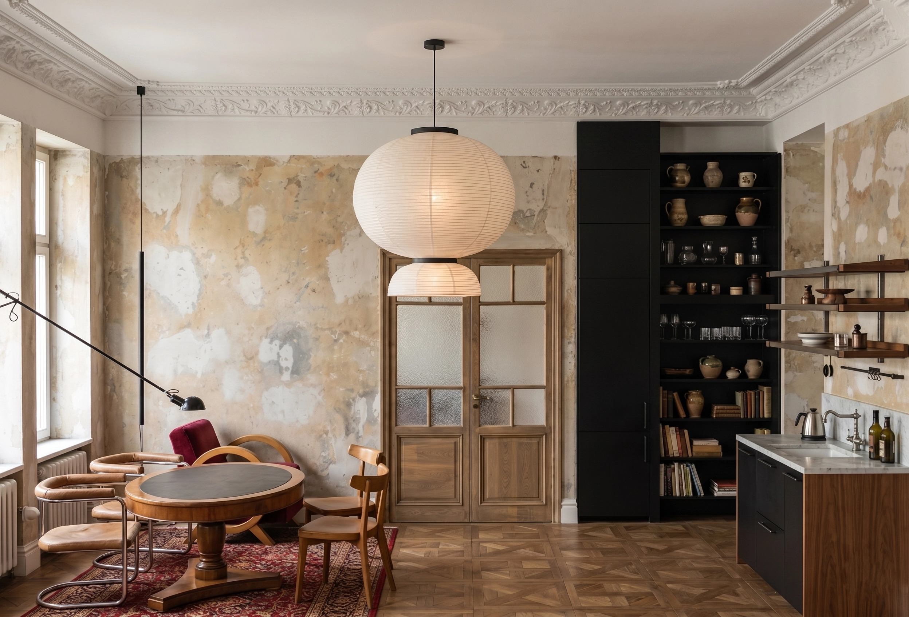
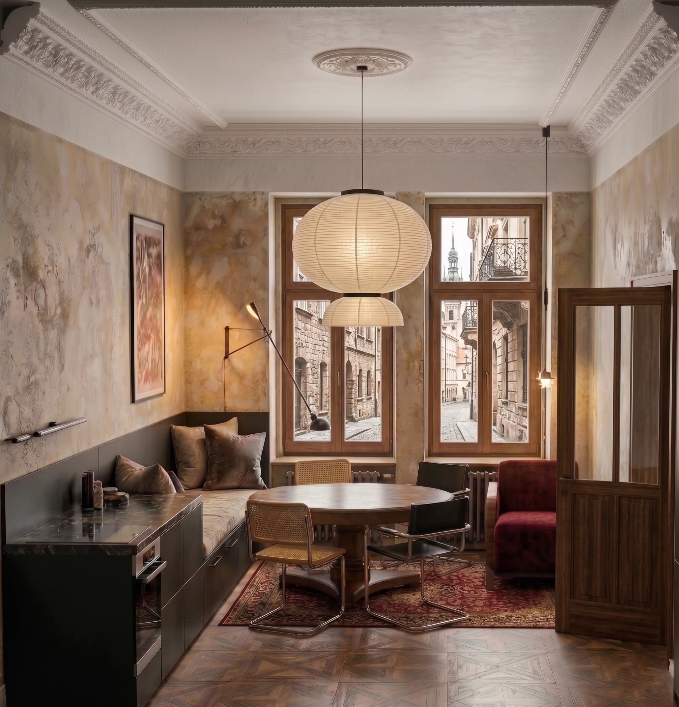
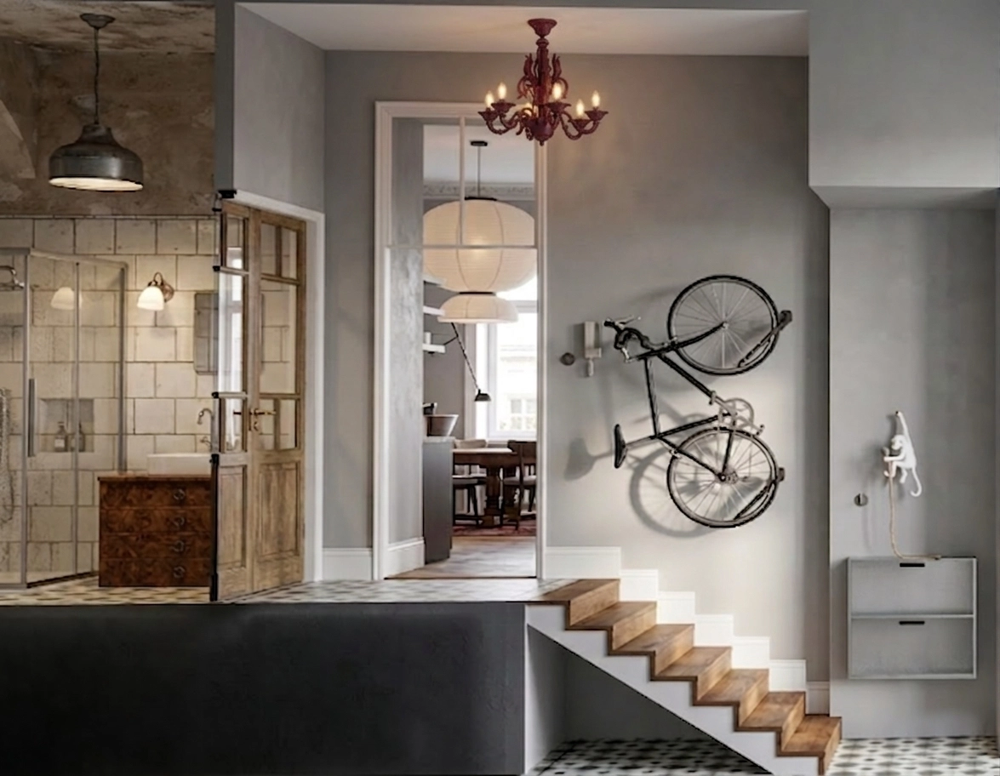
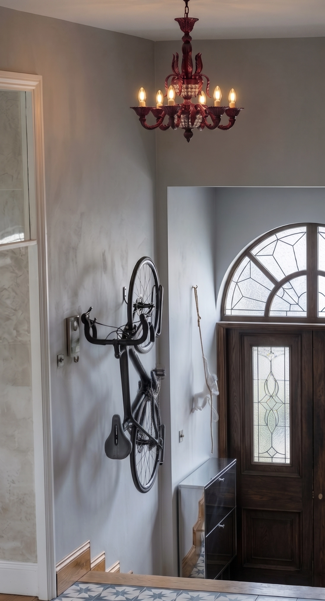
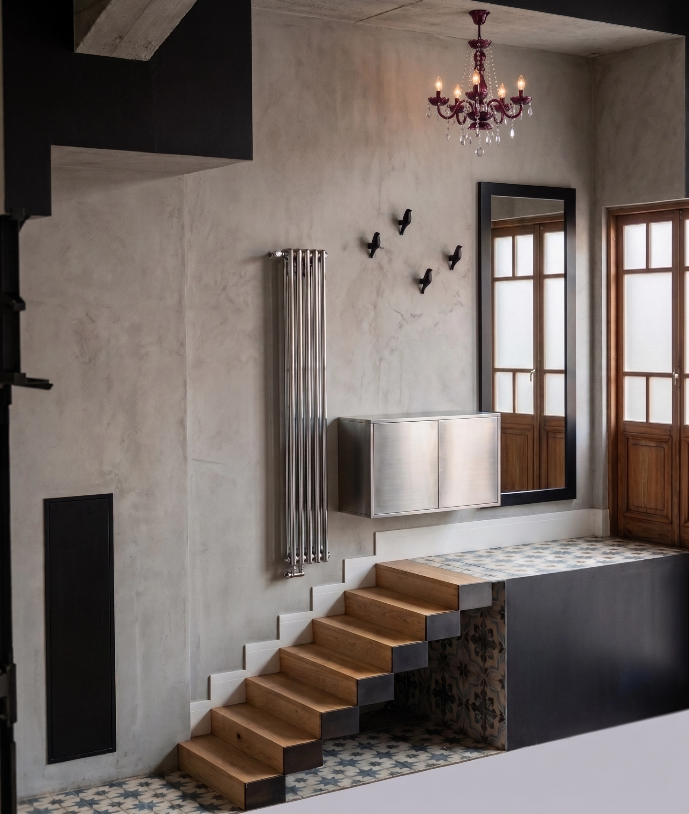

Nowo
Mieszkanie / KamienicaMieszkanie w warszawskiej kamienicy, w którym historyczny charakter budynku spotyka się z nowoczesnym, neuroarchitektonicznym podejściem do przestrzeni. Zachowane oryginalne detale współgrają z nowym układem funkcjonalnym, świeżą paletą materiałów i światłem dopasowanym do potrzeb mieszkańców.





Marzy Ci się podobna metamorfoza?
Skontaktuj się